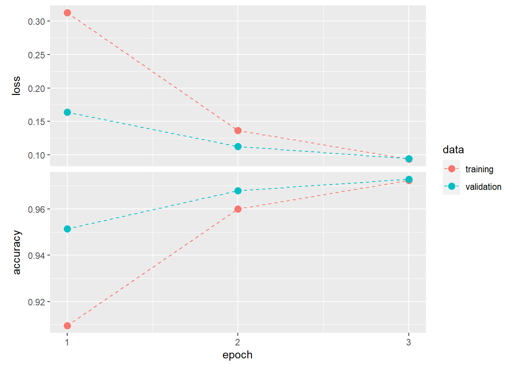

This notebook contains the code samples found in Chapter 2, Section 1 of Deep Learning with R. Note that the original text features far more content, in particular further explanations and figures: in this notebook, you will only find source code and related comments.
library(tidyverse)
library(keras)c(c(x_train, y_train), c(x_test, y_test)) %<-% keras::dataset_mnist()
cat("\nX train shape:\t", dim(x_train))
X train shape: 60000 28 28cat("\nX test shape:\t", dim(x_test))
X test shape: 10000 28 28cat("\nY train shape:\t", dim(y_train))
Y train shape: 60000cat("\nY test shape:\t", dim(y_test))
Y test shape: 10000plot_digits_by_class <- function(c) {
# plot first 15 digits of class c
# accepted labels are between 0 and 9
if (c > -1 & c < 10) {
# indexes of the first 15 digits of class c
idx <- which(y_train == c)[1:15]
# prepare plotting area
par(mfcol=c(3, 5))
par(mar=c(0, 0, 0, 0), xaxs = 'i', yaxs = 'i')
# plot digits corresponding to indexes
for (i in idx) {
img <- x_train[i,,]
img <- t(apply(img, 2, rev))
image(1:28, 1:28, img, col = gray((0:255) / 255), xaxt = 'n', yaxt = 'n')
}
} else {
return("Labels are between 0 and 9.")
}
}x_train_reshaped = array_reshape(x_train, c(60000, 28*28)) / 255
x_test_reshaped = array_reshape(x_test, c(10000, 28*28)) / 255y_train <- to_categorical(y_train)
y_test <- to_categorical(y_test)model <- keras_model_sequential(input_shape = c(28 * 28)) %>%
layer_dense(units = 512, activation = "relu") %>%
layer_dropout(0.2) %>%
layer_dense(units = 10, activation = "softmax")model %>%
summary()Model: "sequential"
________________________________________________________________________________
Layer (type) Output Shape Param #
================================================================================
dense_1 (Dense) (None, 512) 401920
dropout (Dropout) (None, 512) 0
dense (Dense) (None, 10) 5130
================================================================================
Total params: 407,050
Trainable params: 407,050
Non-trainable params: 0
________________________________________________________________________________model %>% compile(
optimizer = "rmsprop",
loss = "categorical_crossentropy",
metrics = c("accuracy")
)# fit the model
history <- model %>% fit(
x_train_reshaped,
y_train,
epochs = 3,
batch_size = 128,
validation_split = 0.2
)# plot training history
history %>%
plot() +
geom_point(size = 3) +
geom_line(linetype = "dashed")
test_metrics <- model %>%
evaluate(x_test_reshaped, y_test)
test_metrics["accuracy"] %>% round(., 3)accuracy
0.974 # get test set predictions
y_hat <- model %>%
predict(x_test_reshaped) %>%
k_argmax() %>%
as.array()
# get test set real labels
y_obs <- y_test %>%
k_argmax() %>%
as.array()
# get misclassified samples indexes
misclass_idx = which(y_hat != y_obs)
# plot 25 misclassified digits
par(mfcol=c(5, 5))
par(mar=c(0, 0, 2.5, 0), xaxs = 'i', yaxs = 'i')
for (i in misclass_idx[0:25]) {
img <- x_test[i,,]
img <- t(apply(img, 2, rev))
image(1:28, 1:28, img, col = gray((0:255)/255), xaxt = 'n', yaxt = 'n',
main = paste("Predicted: ", y_hat[i] , "\nTrue: ", y_obs[i]))
}